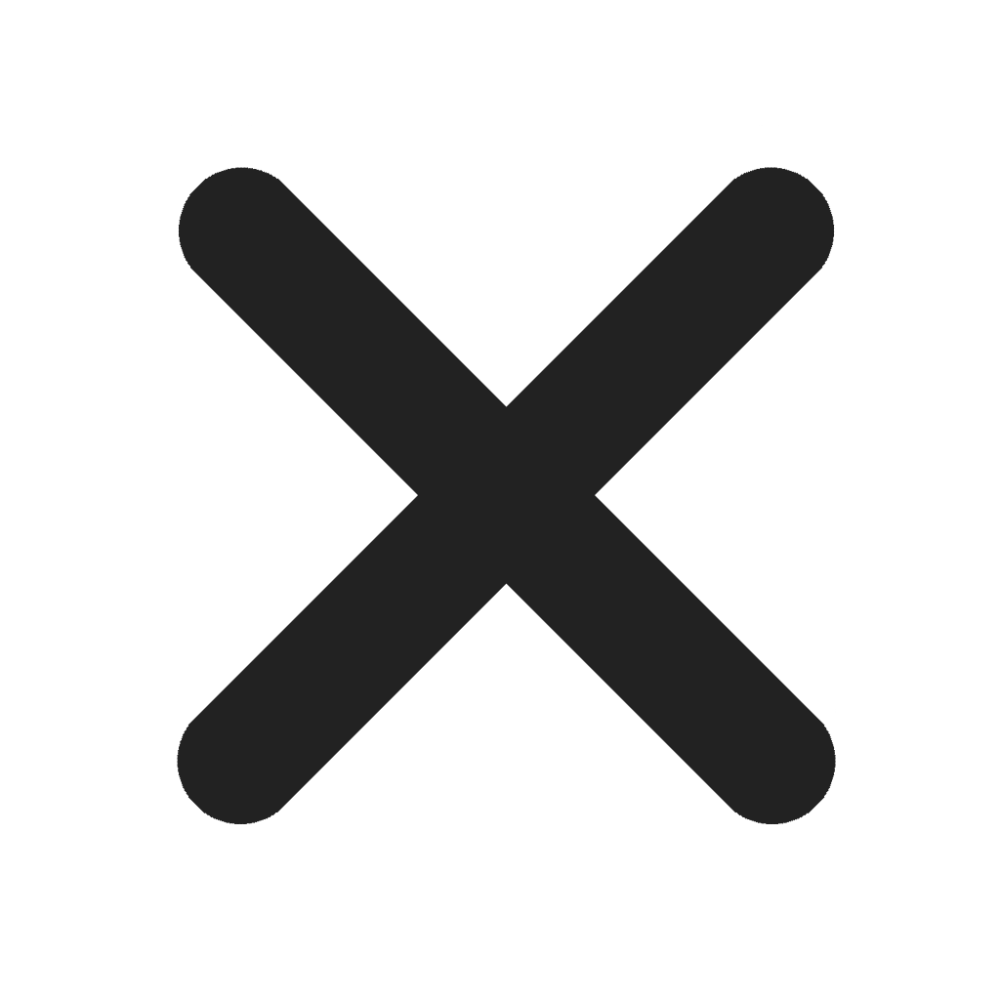
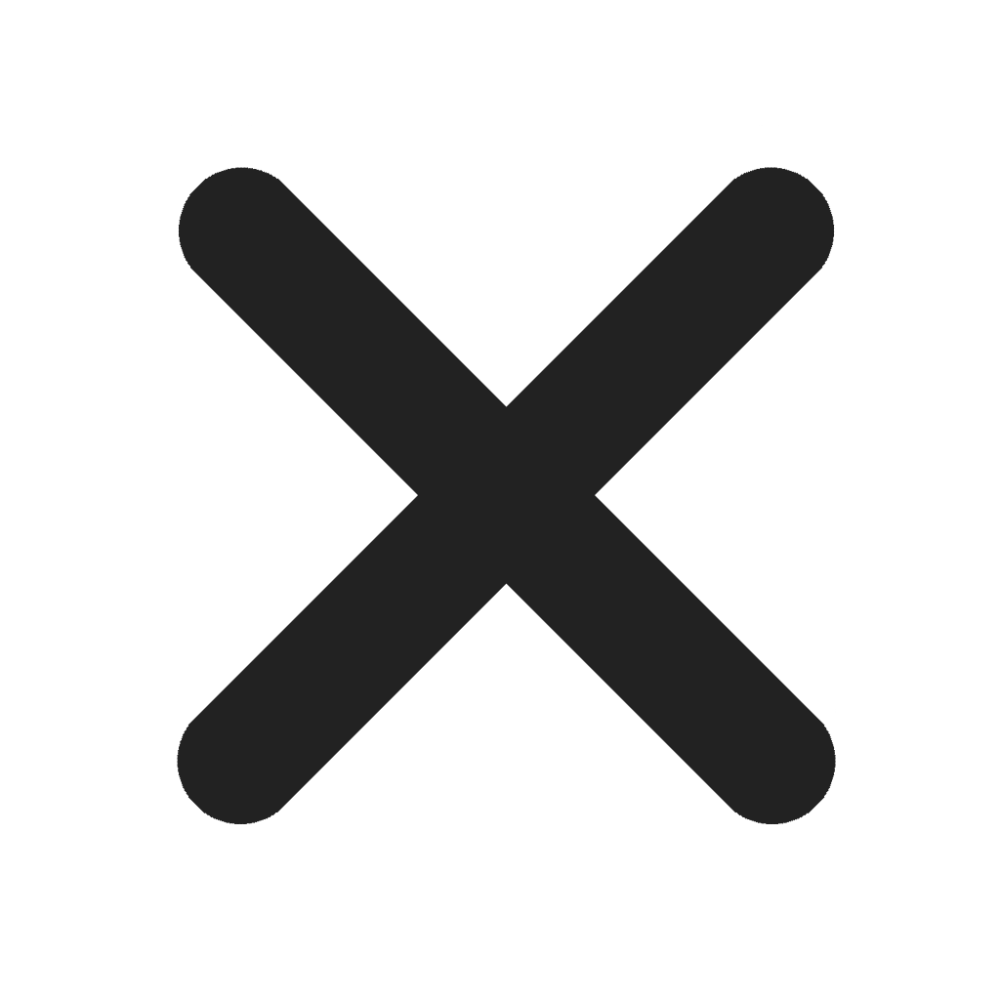

KASVUN MAHDOLLISTAJAT
Autamme organisaatioita onnistumaan ja ihmisiä kasvamaan johtajuudessa
Kasvun mahdollistajat Oy on johtamisen ja työyhteisöjen kehittäjä. Saat käyttöösi laajan osaamisemme, joka pohjautuu monipuoliseen käytännön kokemukseen mm. johtajan työstä eri organisaatioissa. Emme tee mitään vasemmalla kädellä. Paneudumme sinun ja organisaatiosi tilanteeseen aidosti ja syvästi. Tuomme uutta ajattelua, avaamme solmuja ja kuljemme rinnalla inhimillisen empaattisesti. Haastamme teitä kehittymään niin työroolissa kuin ihmisinä.
Palvelukokonaisuuden rakennamme sinulle ja yrityksellesi aina räätälöidysti. Käytämme innostavia ja oivalluttavia työmenetelmiä ja työkaluja. Teemme työtämme tavoitteellisesti ja järjestelmällisesti. Takaamme, että yhteistyömme on vaikuttavaa: toteutatte strategiaa ja etenette tavoitteisanne nopeammin, tehokkaammin ja tuloksellisemmin. Yhteistyö kanssamme on energisoivaa ja sujuu mutkattomasti, sanovat asiakkaamme. He arvostavat kirkasta ajatteluamme, sitoutumistamme ja inhimillistä otettamme.
Kasvun mahdollistajat Oy on kuin luottoystäväsi: luottamuksesi arvoinen briljantti ammattilainen.
PALVELUT
Autamme sinua ja organisaatiotasi
- Päivittämään strategian, kirkastamaan uuden suunnan ja toteuttamaan strategiaa koko organisaation voimin
- Varmistamaan tulevan muutoksen onnistumisen ja henkilöstön sitoutumisen
- Muokkaamaan organisaation kulttuuria ja käytäntöjä tavoiteltuun suuntaan
- Määrittelemään johtamistavan ja konkretisoimaan sen esihenkilöiden käytännön työhön
- Nostamaan johtamisen ja johtotiimityön uudelle tasolle
- Selkeyttämään omaa johtamistasi ja kasvamaan johtajuudessa
- Parantamaan vuorovaikutustaitoja
- Löytämään ratkaisuja kiperiin tilanteisiin
Tarjoamme tueksesi sekä henkilökohtaista että pienryhmissä tapahtuvaa mentorointia, työnohjausta, uraohjausta, valmennusta sekä työpajojen ja kokousten fasilitointia.
Asiakkaan tilanne on aina uniikki. Siksi räätälöimme palvelumme jokaiselle asiakkaalle tämän tilanteen ja tavoitteiden mukaisesti. Saat täsmätoteutuksena juuri sen hyödyn, mitä kussakin tilanteessa tarvitset.
TARINA
Kasvun mahdollistajat Oy syntyi 2015 intohimosta auttaa ihmisiä onnistumaan paremmin työssään ja kasvamaan johtajuudessa. Ammattilaisuutemme pohjautuu vankan koulutustaustan lisäksi laajoihin omiin johtamiskokemuksiin eri organisaatioissa ja toimialoilla. Lähes kaikkea mahdollista työelämässä kokeneena mikään inhimillinen ei ole meille vierasta. Kaikkein eniten olemme oppineet kehnoilta esihenkilöiltämme: noin emme halua itse toimia johtajina ja esihenkilöinä. Onneksi meillä on ollut matkamme varrella enimmäkseen hyviä pomoja ja muutamia aivan loistaviakin.
Uskomme valmentavaan ja jaettuun johtajuuteen: onnistua voi vain silloin, kun ihmiset ovat innostuneita työstään, haluavat kehittyä ja ponnistella parhaansa mukaan organisaatiosi tavoitteiden eteen. Johtaja ja esihenkilö ovat onnistumisen mahdollistajia. Tämän päivän kiihkeässä murroksessa ei pärjää vanhoilla toimintatavoilla, siksi jokaisen organisaation ja yksilön on oltava hereillä ja kehitettävä jatkuvasti omaa osaamistaan ja toimintatapojaan. Kun yksilöt kehittyvät, koko organisaatio hyötyy ja sen myötä onnistuu paremmin tavoitteissaan.
Yrityksen siemen alkoi itää jo vuosia aikaisemmin. Monipuolisilla urapoluillamme ja johtajan työssämme meille kirkastui vähitellen oma missiomme: haluamme auttaa organisaatioita ja niiden ihmisiä onnistumaan paremmin ja kasvamaan ihmisinä ja johtajina. Kun aloitimme vuosia sitten ensimmäisissä johtajan rooleissamme, syttyi myös kipinä tulla johtamistyössä yhä paremmaksi. Aloitimme aktiivisen oman johtajuutemme kehittämisen kouluttautumalla, lukemalla paljon ja ennen kaikkea käytännön työssä kokeilemalla. Nopsasti havaitsimme mikä toimii hyvin ja mikä ei laisinkaan.
Energisoidumme yhteistyöstä osaavien, energisten ja ihmisläheisten ammattilaisten kanssa. Siksi Kasvun mahdollistajat Oy toimii tiiviissä yhteistyössä monien kokeneiden valmentajien kanssa. Yhdessä voimme tarjota sinulle enemmän, ja samalla kehitymme koko ajan paremmiksi oppien toisiltamme.
Innostumme siitä, kun voimme auttaa asiakkaitamme oivaltamaan, kehittymään ja onnistumaan. Se tekee työstämme Kasvun mahdollistajat Oy:ssä merkityksellistä. Teemme työtämme asiakkaan parhaaksi aina isolla intohimolla ja suurella sydämellä.
Kasvun mahdollistajat,
Päivi ja TiinaASIANTUNTIJAT
Kasvun mahdollistajat Oy tekee aktiivista yhteistyötä eri alojen kokeneiden ammattilaisten kanssa. Verkostomme avulla voimme tarjota sinulle aina parhaat osaajat erilaisiin tilanteisiin ja myös laajempiin kehityshankkeisiin.
Kasvun mahdollistajat Oy:n yhteistökumppaneita ovat mm.

Päivi
Innostunut ja inspiroiva ammattimentori, valmentaja, coach ja fasilitaattoriMissioni on auttaa organisaatioita ja niiden ihmisiä onnistumaan paremmin työssään ja kasvamaan johtajuudessa. Ydinosaamistani ovat valmentava johtaminen, esihenkilötyö, mentorointi ja näkemyksellinen toiminnan kehittäminen vastaamaan tarpeita alati muuttuvassa toimintaympäristössä. Olen erittäin kokenut strategiatyön ja strategian toteuttamisen sparraaja sekä muutosjohtamisen ammattilainen. Oman tuoreen johtajakokemukseni kautta tiedän, miten laajoja kehityshankkeita johdetaan ja miten koko henkilöstö saadaan innostumaan ja uudistamaan toimintatapojaan. Tuen sinua, johtajia ja esihenkilöitä kehittymään inhimillisessä johtajuudessa.
Työtapani on tavoitteellinen, konkreettinen ja energinen. Valmennusten ja mentoroinnin pohdinnat ja oivallukset kytkeytyvät suoraan osallistujien työhön. Olen sekä näkemyksellinen visionääri että vahva käytännön tekijä. Luontainen uteliaisuuteni ja kehittymisen palo ovat kuljettaneet minua mitä moninaisempiin työrooleihin ja luottamustehtäviin. Tunnen laajasti erilaisia organisaatioita ja niiden tilanteita ja tarpeita.
Vapaa-ajallani liikun luonnossa, käyn zumbassa ja salilla ja reissaan niin kotimaassa kuin maailmalla. Toimin aktiivisesti muutaman organisaation hallituksessa sekä erilaisissa luottamustehtävissä ja laajoissa verkostoissa.
Koulutus: KTM, Certified Business Mentor, Certified Business Coach, Sertifioitu fasilitaattori, NLP Practitioner, RMP Motivaatiovalmentaja, Henkilöstöjohtajan tutkinto, Tuotekehittäjän erikoisammattitutkinto, Tiedottajan tutkinto MTi.
Tutustu taustaani tarkemmin LinkedInissä.
OTA YHTEYTTÄ
Hankalia henkilöstötilanteita, muutoksia, uusi strategia? Tavoitteenasi seuraava askel urallasi vaiko uran suunta hukassa? kesken.
Otapa yhteyttä, niin jutellaan tarkemmin. Olemme sinuun yhteydessä parin työpäivän sisällä. Sitoumuksetta, tottakai.
Tarjoamme joka kuukausi yhdelle onnekkaalle ilmaiseksi henkilökohtaisen tunnin mentoroinnin etätoteutuksena. Arvomme saajan joka kuukauden ensimmäinen päivä kaikkien yhteydenottajien kesken.
ASIAKASKOKEMUKSIA
"Päivin ja Aijan Rinnekodille suunnitteleman ja toteuttaman johtamisvalmennuksen aikana Rinnekodin johto ja esihenkilöt laativat yhteisen johtamislupauksen. Johtamislupaus muotoutui Päivin ja Aijan sparrauksessa innostavaan päämääräämme #ihmistälähellä-visioomme sopivaksi. Valmennuksen aihealueiden mukainen toiminta on kehittynyt Rinnekodissa hienosti. Konkreettista yksilö- sekä yksikkötason kehitystä on havaittavissa selvästi valmennuksen jälkeen tehdyissä Työvire-mittauksissa ja asiakaspalautteissa.
Valmennuksessa käytettyjä monipuolisia yksilö- ja ryhmätyöskentelymenetelmiä on hyödynnetty niin yksiköiden kuin palvelualueiden kehittämisessä. Valmennus lisäsi johdon ja esihenkilöiden johtamis- ja tiimityötaitoja. Yhteiset toimintatavat, yhteinen tekeminen ja vuorovaikutus lisääntyivät. Yhteinen tekeminen on kirkastanut toimintaamme, samalla sitouttaen työntekijöitä uuden strategiamme mukaiseen työhön.
Valmennus edisti positiivisella tavalla tunnejohtamisen taitoja ja Rinnekodin tunneilmastoja, kytkeytyen näin myös strategisiin tavoitteisiin. Päivin ja Aijan innostava ja sparraava asiantuntijuus on kartuttanut Rinnekodin johdon ja esihenkilöiden toimintakulttuurin muutokseen tarvittavia johtamistaitoja ja lisännyt myös heidän sitoutumisen astetta."
Leila Rutanen, liiketoimintajohtaja, johtoryhmän puheenjohtaja, Rinnekoti
"Valmennuksesta oli oikein kovasti hyötyä. Saimme lyhyessä ajassa hahmoteltua ratkaisuvaihtoehtoja haasteisiimme ja jokaisella kerralla rakennettua toimivan suunnitelman. Päivi pystyi hyvin haastamaan asioiden monipuoliseen pohdiskeluun ja omat ajatuksemme jäsentyivät aiempaa paremmin. Ajankäytöllisesti olimme tehokkaita ja yksin asioiden pohtiminen olisi varmaan vienyt pidempään. Kaiken lisäksi jokaisesta valmennuskerrasta sai energiaa. Valmentajana Päivi toimi erittäin hyvin ja vei keskustelun hyvin kohti tavoitetta. Hän esitti hyviä kysymyksiä ja pysyi hyvin valmentajan roolissa, auttoi oivaltamaan itse."
Johtaja, Viestintätoimisto
"Päivi on valmentajana ammattitaitoinen ja erittäin hyvin organisoitunut. Hän kuljettaa asiakkaan kehittymisprosessia taitavasti tilaa antaen. Työskentely Päivin ohjauksessa on tavoitteellista ja tuloksellista, ja yhteistyö hänen kanssaan sujuu mutkattomasti ja helposti. Voin lämpimästi suositella Päiviä valmentajaksi."
Henkilöstöpäällikkö, Keskisuuri IT-alan yritys
"Työelämäni taitekohdassa, työpaikkojen välillä kilpailukiellon aikana, oli coaching enemmän kuin tarpeellinen ja ennen kaikkea valaiseva. Päivin apu oli uramietinnöissäni oleellinen ja hyödyllinen. Hän esitti kysymyksiä, kysymyksiä ja jatkokysymyksiä, joihin ääneen vastaaminen auttoi minua ymmärtämään omaa tahtoani. Tapaamisemme tukivat ja lisäsivät myös omaa käsitystäni mm vahvuuksistani, Päivi ohjasi keskusteluja kuitenkin ohjailematta. Kaiken kaikkiaan hyödyllinen ja minua vahvistava coachaus. Kiitos."
Toimitusjohtaja, SOTE-alan yritys
"En aluksi oikein tiennyt, kuinka coachingiin suhtautuisin, olin ehkä hieman skeptinen sen suhteen. Coaching osoittautui kuitenkin hyvin käyttökelpoiseksi tavaksi käsitellä ongelmia oman työn kannalta. Sain coachingista konkreettisia työkaluja ja ratkaisuja omiin arkipäivän ongelmiini, tiiminvetämiseen, esimiestyöhön ja työkiireisiin liittyen. Päivi oli helposti lähestyttävä ja hänen kanssaan oli helppo keskustella ja keskustelusessioiden jälkeen, minulla oli monesti jo työlista seuraavista konkreettisista toimenpiteistä, joilla helpotan omaa arkeani."
Asiakaspalvelupäällikkö, Koulutusalan yritys
"Valmennuksen hyöty ylitti odotukseni. Valmennus tarjosi ajan työstää meille ajankohtaisia asioita eteenpäin. Päivi ohjasi ajatteluamme hyvillä kysymyksillä, jotka johtivat pohdintaan ja tuottivat oivalluksia työhömme. Antoisa kokemus. Päivi toimi ammattimaisesti ja inhimillisen empaattisesti valmentajana."
Toimitusjohtaja, Koulutusalan yritys